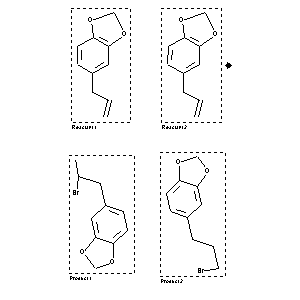

|  |
| FA | RX(1); FLST(1); RX(1) |
Reaction (1 of 1)
| Reaction ID | 1767862 |
| Reactant BRN | 136380 |
| Reactant | 5-allyl-benzo[1,3]dioxole |
| Product BRN | 150219; 150287 |
| Product | 5-(2-bromo-propyl)-benzo[1,3]dioxole; 5-(3-bromo-propyl)-benzo[1,3]dioxole |
| No. of Reaction Details | 1 |
Reaction Details (1 of 1)
| Reaction Classification | Preparation |
| Reagent | 1.) BH3, 2.) Br2 |
| Other Conditions | 1.) 0 deg C, 1 h, THF, 2.) 0 deg C, 30 min, THF, H2O |
| Comment | Yield given. Multistep reaction. Yields of byproduct given |
| Citation Pointer | 5573752; Journal; Kabalka, George W.; Sastry, Kunda A. R.; Hsu, Henry C.; Hylarides, Mark D.; JOCEAH; J.Org.Chem.; EN; 46; 15; 1981; 3113-3115; |
Reference (1 of 1)
| Citation Number | 5573752 |
| Document Type | Journal |
| Authors | Kabalka, George W.; Sastry, Kunda A. R.; Hsu, Henry C.; Hylarides, Mark D. |
| CODEN | JOCEAH |
| Journal Title | J.Org.Chem. |
| Language Code | EN |
| (Series) Volume | 46 |
| Number | 15 |
| Publication Year | 1981 |
| Page | 3113-3115 |